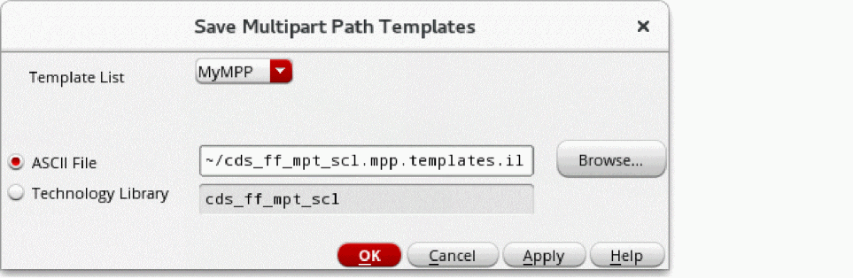

Multipart Path Values Saved as a Template
Whenever you create a new type of multipart path (MPP) that you might want to use again, you can save the values currently in the Create Multipart Path and ROD Subpart forms as a template with a unique name. This lets you create the same or similar MPPs. You can save MPPs as templates in the following ways:
- Save the MPP template to an ASCII file in your local hierarchy.
-
Save the MPP template to the temporary technology file in the virtual memory.
If you have the write permission, you can also save the MPP to your technology library on the disk.

Instead of using a graphical user interface to define an MPP, you can create an ASCII file to define one or more MPP templates by using the leDefineMPPTemplate function.
Related Topics
Saving MPP Templates to an ASCII File
Saving MPP Templates to Your Technology Library
Saving MPP Templates to Your Technology Library on the Disk
Loading an ASCII Multipart Path Template File
Flow for Creating Multipart Paths
Return to top